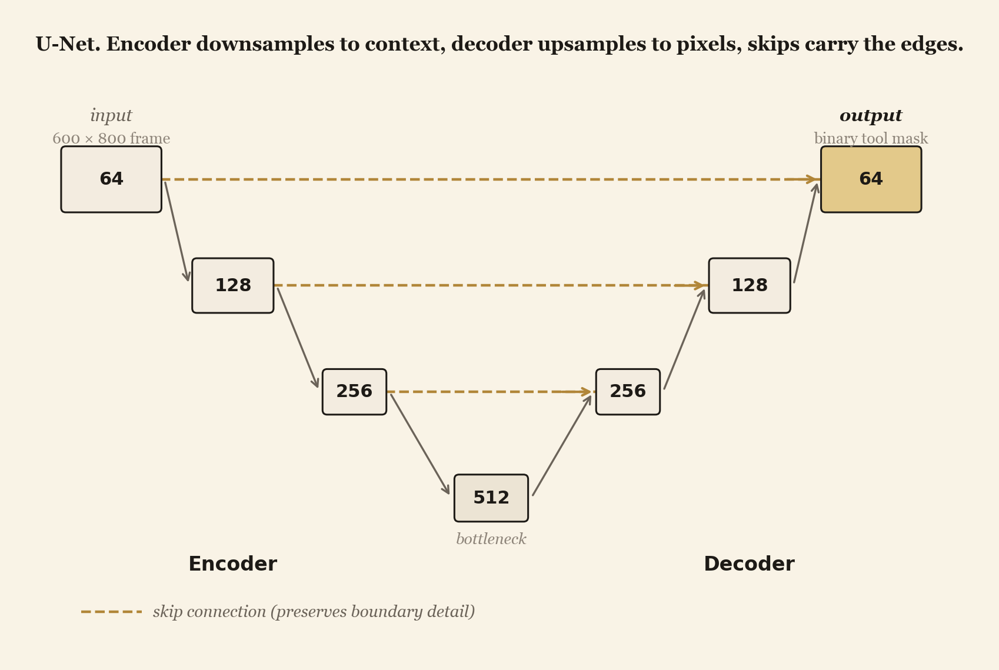
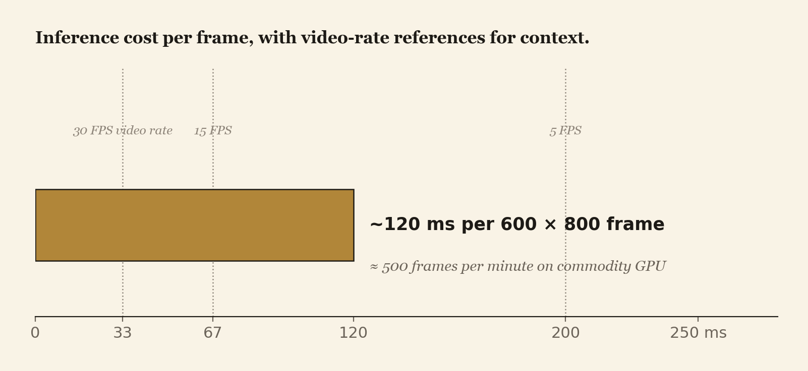

A U-Net trained on 300 hand-labeled frames captured through a Modus V exoscope at Synaptive Medical and Robarts Research Institute, segmenting tools from tissue at ~95% DICE in under 0.12 s per frame.
A convolutional segmentation network that traces surgical instruments out of background tissue, frame by frame, on real operating-room footage rather than phantoms or simulated images. Trained on a dataset hand-built from a live procedure: 300 frames, captured through a Modus V exoscope on representative tissue, each one segmented by hand in ITK-SNAP into a binary tool-versus-tissue mask. Validated against a fully held-out surgical video, and benchmarked across four lighting and tool-count scenarios that span the realistic range of intraoperative conditions.
The model is a U-Net (Ronneberger et al., 2015), picked because skip connections preserve the fine spatial detail that downsampling otherwise destroys, which is the part of the network that actually has to land the tool boundary. Encoder, decoder, skip connections. Adam with binary cross-entropy. Roughly two hours of training on a single GPU. Fluorescent-blue frames are converted to grayscale before training: the network learns the tool more cleanly from intensity than from hue, a finding that fell out of the data work rather than the architecture.
The novelty is not the architecture. It is the data, the partnership, and the deployment context. 300 hand-labeled frames from a real Synaptive Modus V exoscope on real tissue, not Cholec80 phantoms or synthetic renders. Coverage of regular illumination and fluorescence-guided surgery in the same model. A working real-time inference loop running on commodity hardware, demonstrated against held-out video that the network never saw during training.
Minimally invasive surgery is the procedure where the surgeon is asked to operate through a keyhole. The camera replaces direct sight, depth perception collapses to a 2D feed, and the instrument tip routinely leaves and reenters the visible field as it moves. Existing literature attributes roughly 30% of complications in this setting to in-procedure misrecognition: tools confused with tissue, edges lost under fluorescence, occlusion read as background.
U-Net is the natural pick for small biomedical datasets, which is precisely the regime here (300 frames after manual labeling, not 30,000). It was designed for exactly this constraint: per-pixel classification with limited training data, where the architecture itself has to compensate for what the data does not have.
The architecture is from 2015. The contribution is in the dataset, the lighting range, and the partnership context that made both possible.
Every section below is the engineering that lives on top of those three. The architecture is the smallest piece.
Standard U-Net. Three downsampling blocks (64, 128, 256 channels), a single 512-channel bottleneck, three upsampling blocks (256, 128, 64), and a final 1×1 convolution that produces the per-pixel tool probability. Skip connections at each level concatenate the encoder feature map with the decoder feature map at matching resolution. Adam, binary cross-entropy on the binary mask, single GPU.

300 frames sampled from a procedural recording captured through the Modus V exoscope on representative pig brain tissue. Each frame hand-segmented in ITK-SNAP into a binary tool / background mask, then exported in both NIfTI (for downstream tooling) and PNG (for the training pipeline). Every segmentation reviewed twice for ground-truth precision before going into the training set.
Evaluation runs on a fully held-out surgical video, captured separately from the training procedure and never seen by the network during training. Frames are extracted, passed through the model individually, and the predicted masks recompiled into a side-by-side overlay against the original footage. Four scenarios are tested with 20 random images each:
The canonical case (regular, one tool) is the closest analogue to a standard intraoperative view and the primary headline number. The other three scenarios test how the model degrades as the input departs from that canonical regime.
Held-out surgical video, never seen during training. 20 random frames per scenario. Side-by-side overlay against the original used as the qualitative inspection mode, DICE on the binary mask as the quantitative metric.

The 95% number is the canonical case on n = 20 random frames from a single held-out video, single seed, single procedural source. It is not a leaderboard claim against published surgical-vision benchmarks (those are scored on different datasets with different label conventions). Read it as "this model works at video-realistic accuracy on data from this Modus V procedure," not as a SOTA result.
A real-time tool overlay trained on real surgical footage, rather than on phantoms or synthetic renders, is a concrete step toward safer minimally invasive procedures. If even a fraction of the 30% misrecognition share of intraoperative complications gets recovered by an overlay that reliably traces tool boundaries, the downstream effect is fewer nerve injuries, fewer collateral tissue insults, and fewer follow-on operations. The same architecture, retrained on appropriate data, generalises beyond tool segmentation into tumor delineation, organ boundaries for surgical planning, and quantitative tracking of disease progression on CT and MRI volumes. The build that matters most here is the data pipeline that made any of it trainable on a real surgical recording.
The limitations map directly onto the next phase of the build.
Surgical footage and procedural context provided by Synaptive Medical Inc. The Modus V exoscope captured every frame in the training set. Tissue and clinical guidance provided by Robarts Research Institute at Western University. Recognized with a Bronze Medal at the Canada-Wide Science Fair.
The architecture is U-Net from Ronneberger et al., 2015.
@inproceedings{ronneberger2015unet,
title = {U-Net: Convolutional Networks for Biomedical Image Segmentation},
author = {Ronneberger, Olaf and Fischer, Philipp and Brox, Thomas},
booktitle = {Medical Image Computing and Computer-Assisted Intervention (MICCAI)},
year = {2015},
url = {https://arxiv.org/abs/1505.04597}
}